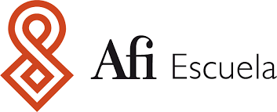
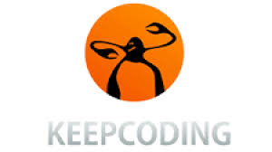

1999
Estudio ADE en la UPV. Termino con el 5º mejor expediente de la promoción
A falta todavía de 1 curso completo y del PFC, entro a trabajar en auditoría

2003
Me incorporo a Deloitte. Trabajo en Valencia durante 10 años. Me desplazo a Princeton, US, durante un año para volver directamente a Madrid
Actualmente soy Senior Manager y parte de la National Audit Quality Office

2023
Máster en Big Data y Data Science en AFI Escuela, ahora AFI Global Education
2024
Mi proyecto más impultivo. Guiada por la necesidad incansable de seguir aprendiendo, inicio un Bootcamp en Web Full Stack Developer
